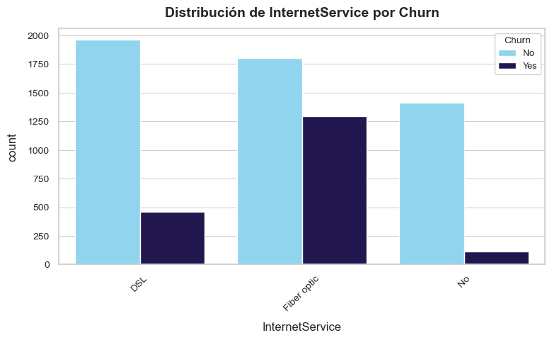
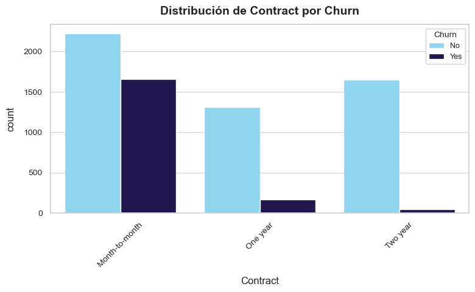
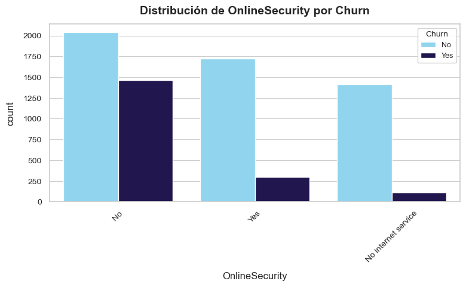
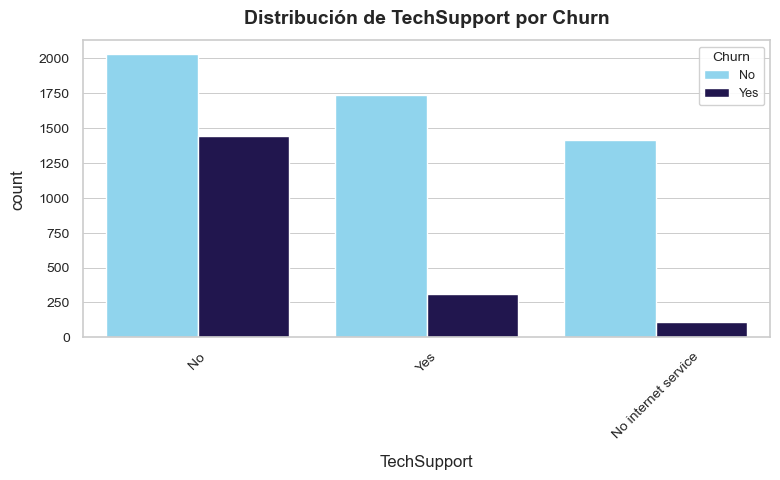
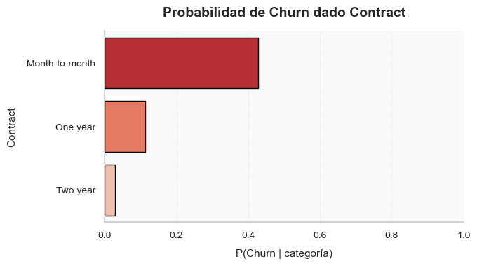
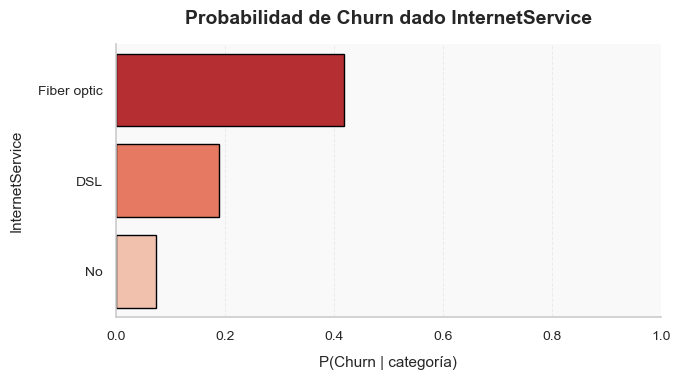
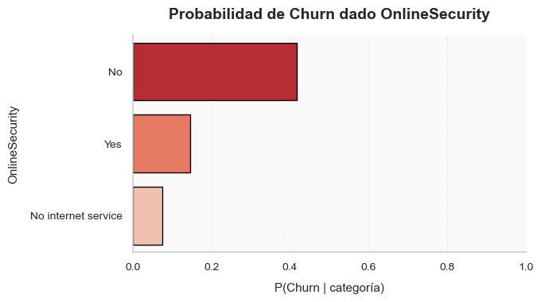
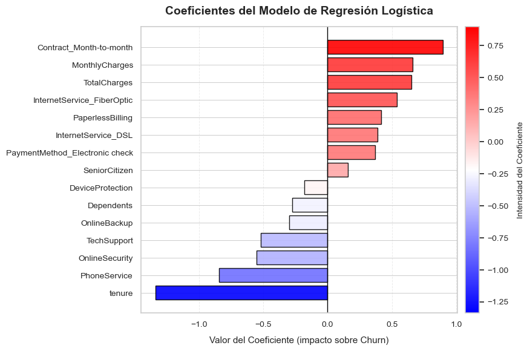

📡 Data Mining: Churn en Telecomunicaciones
CRISP-DM · © Juan Miguel Rodríguez Trujillo
En un sector tan dinámico como el de las telecomunicaciones, comprender por qué un cliente decide cancelar su servicio resulta fundamental para sostener la competitividad. Esta introducción integra los primeros pasos de la metodología CRISP-DM para transformar datos operativos en insights estratégicos orientados a fortalecer la retención.
🎯 Objetivo General
Construir una base analítica sólida que permita identificar patrones de comportamiento, señales tempranas de abandono y generar insumos para modelos predictivos que apoyen decisiones comerciales y operativas de alto impacto.
📦 Descripción del Dataset
Se utiliza el dataset Telco Customer Churn, que contiene información de 7.043 clientes y diversas variables asociadas a:
- Características demográficas y socioeconómicas.
- Tipo de contrato y servicios contratados.
- Patrones de uso, facturación y método de pago.
- La variable objetivo Churn (abandono voluntario).
💡 Alcance del Proyecto
Este documento consolida los pasos iniciales del proceso CRISP-DM como fundamento para las etapas avanzadas de modelado y evaluación. Las siguientes secciones integran una visión estratégica del negocio, un análisis exploratorio completo y los primeros hallazgos clave para la toma de decisiones.
🌐 Contexto del negocio
El sector de telecomunicaciones opera en un entorno altamente competitivo, caracterizado por bajas barreras de cambio, márgenes ajustados y clientes cada vez más sensibles a la calidad del servicio. En este contexto, el churn voluntario se convierte en un determinante clave del desempeño comercial y financiero. Entender sus causas permite priorizar inversiones, mejorar la retención y sostener el crecimiento.
🎯 Propósito estratégico
Identificar los factores que influyen en la decisión de cancelar el servicio, anticipar comportamientos de riesgo y orientar estrategias de retención con enfoque en eficiencia comercial y maximización del valor del cliente.
📌 Dinámicas clave del negocio
- Competencia intensa: amplia oferta de operadores y servicios sustitutos.
- Altos costos de adquisición: captar nuevos clientes cuesta entre 5 y 7 veces más que retener a uno existente.
- Heterogeneidad del portafolio: perfiles de clientes variados en contrato, facturación, uso y antigüedad.
- Impacto financiero directo: variaciones mínimas en churn afectan sustancialmente ingresos y estabilidad.
🔍 Pregunta central del negocio
¿Qué características del cliente, del servicio y del comportamiento operativo explican la probabilidad de abandono del servicio?
Responderla permite diseñar estrategias preventivas, segmentaciones accionables y planes de intervención personalizados.
📈 Objetivos específicos
- Identificar factores estructurales asociados al churn.
- Detectar señales tempranas de abandono basadas en comportamiento.
- Relacionar hallazgos del EDA con implicaciones estratégicas.
- Definir métricas de éxito alineadas a objetivos comerciales (recall clase positiva, ROC-AUC, churn ajustado).
La comprensión del negocio define el rumbo del análisis. Los modelos predictivos solo generan valor cuando responden a una necesidad estratégica clara y cuando sus métricas se traducen en impacto comercial tangible.
📘 Overview general
Esta fase consolida una visión analítica del comportamiento del churn mediante exploraciones categóricas, probabilísticas y numéricas. Su propósito es establecer patrones previos al modelado, identificar señales tempranas de riesgo y fortalecer la comprensión del dataset desde múltiples enfoques.
Las siguientes visualizaciones detallan cómo el churn se distribuye entre las principales variables categóricas del servicio y del cliente.
🔹 Internet Service
🔹 Contract
🔹 Online Security
🔹 Payment Method

🔹 Tech Support
Estas visualizaciones sintetizan la probabilidad estimada de churn según categorías relevantes del cliente y del servicio.
🔹 Contract
🔹 Internet Service
🔹 Online Security
🔹 Payment Method

🔹 Tech Support
Visualización tridimensional basada en una muestra estratificada del dataset. Permite identificar comportamientos diferenciados según tenure, MonthlyCharges y TotalCharges.
🧭 Síntesis Ejecutiva
Antes de construir cualquier modelo, se identifican los patrones estructurales más determinantes del churn. Estos insights condensan los factores que deben guiar la estrategia de retención, el diseño de campañas y el enfoque del modelado.
🔍 Insights clave antes de modelar
Clientes con fibra óptica
Los usuarios con Internet de fibra óptica presentan el nivel más alto de churn, posiblemente debido a expectativas de servicio más elevadas y menor tolerancia a fallos.
Contrato mensual = alto riesgo
Los clientes con contrato Month-to-Month concentran el mayor riesgo, dada la baja fricción para cancelar el servicio.
Soporte técnico protege
Los clientes con Tech Support o Online Security muestran una probabilidad significativamente menor de desertar.
Pago con cheque electrónico
El método de pago Electronic Check es el que mayor churn presenta, convirtiéndose en un indicador táctico clave.
Nuevos + cargos elevados
Clientes nuevos con altos MonthlyCharges conforman el segmento de riesgo más crítico previo al modelado.
📘 Enfoque de Modelado
Se implementó un modelo de Regresión Logística, una técnica ampliamente utilizada
en problemas de clasificación binaria como el análisis de churn. Su principal ventaja radica en su
interpretabilidad: permite estimar el efecto marginal de cada variable sobre la probabilidad de
abandono del cliente.
A continuación se presenta el gráfico de coeficientes, el cual resume visualmente el impacto relativo
de cada predictor después de estandarizar y preparar el dataset.
📊 Coeficientes del Modelo de Regresión Logística
El gráfico muestra la contribución de cada variable al riesgo de churn. Valores positivos aumentan la probabilidad de abandono, mientras que valores negativos actúan como factores de retención.
💡 Insights Ejecutivos del Modelo
🔥 Drivers más críticos
Variables como Contract Month-to-Month, MonthlyCharges y Internet Fiber Optic exhiben los coeficientes positivos más altos, indicando un riesgo significativo de abandono.
🔧 Factores que reducen churn
Variables como tenure, OnlineSecurity y TechSupport presentan coeficientes negativos, consolidándose como mecanismos clave de retención.
📈 Perfil del cliente en riesgo
El modelo perfila al cliente en mayor riesgo como aquel con bajo tenure, cargos mensuales elevados, sin soporte técnico y bajo un contrato mensual.
📘 Rol estratégico de la evaluación
En contextos ejecutivos, evaluar un modelo de clasificación no implica solo medir
su precisión, sino entender cómo y dónde se equivoca,
y si dichos errores son tolerables para la estrategia comercial.
En churn, la prioridad suele centrarse en maximizar el recall:
identificar la mayor cantidad posible de clientes que están próximos a desertar,
incluso a costa de aumentar los falsos positivos.
A continuación se presentan los principales entregables de evaluación del
modelo de Regresión Logística.
🧊 Matriz de confusión · Performance operativo
Permite visualizar la distribución de aciertos y errores entre módulos de retención (No Churn) y abandono (Churn). Es la base para definir estrategias de intervención orientadas a impacto comercial.
- Fuerte capacidad para identificar correctamente a los clientes que no desertan.
- Detección razonable de churners, con falsos negativos aún presentes.
- Permite activar discusiones sobre costos de error y calibración del umbral.
📉 Curva ROC & AUC
La ROC sintetiza la capacidad del modelo para discriminar entre clientes que abandonan vs. aquellos que permanecen, a través de todos los umbrales posibles.
El modelo obtiene un AUC ≈ 0.84, lo que indica una capacidad robusta de discriminación. Desde una perspectiva ejecutiva, esto implica una herramienta confiable para priorizar clientes cuando los recursos de retención son limitados.
🎯 Curva Precision–Recall
En problemas desbalanceados (como churn), esta curva ofrece una lectura más sensible que la ROC para evaluar la calidad real de las alertas.
La curva muestra que al aumentar el recall (capturar más churners), la precisión disminuye al incluir más falsos positivos. El modelo mantiene una precisión competitiva para niveles medios de recall, lo que lo hace adecuado para campañas focalizadas.
⚙️ Curva Precision-Recall + Umbral
Ajustar el umbral de clasificación permite alinear el comportamiento del modelo con el apetito de riesgo y el retorno esperado de las campañas.
A medida que sube el umbral, el modelo se vuelve más restrictivo: más precisión, menos recall. La selección óptima debe ser conjunta entre áreas de riesgo, comercial y data science.
🔎 Matriz de confusión con Umbral 0.35 · Enfoque en Recall
Reducir el umbral aumenta la sensibilidad del modelo y maximiza la detección de churners. Ideal para escenarios donde perder un cliente es más costoso que intervenir uno que estaba estable.

Con un umbral más bajo, el modelo identifica 403 churners reales, aumentando la cobertura frente al umbral estándar. El costo: 335 falsos positivos adicionales, que deben ser gestionados vía campañas eficientes.
- ✔ Mayor cobertura de churners: minimiza pérdidas silenciosas.
- ❗ Más falsos positivos: incrementa la carga de contactabilidad.
- 💼 Relevancia ejecutiva: útil en segmentos premium y cuentas estratégicas.
- 🎯 Recomendación: emplear este umbral cuando el ROI de retención es alto.